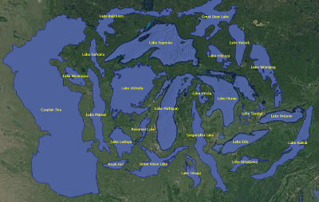

Neste problema deverá submeter uma classe ED242 contendo um programa completo para resolver o problema (ou seja, com o método main).
Não será adicionado nenhum código base ao seu programa, pelo que tem de incluir na submissão quaisquer classes que sejam necessárias para além das classes do próprio Java.

Estruturolândia é uma bela ilha no meio do Oceano Pacífico cheia de lagos. O seu mapa pode ser visto como uma matriz de L linhas por C colunas. Cada uma das células desta matriz pode ser água ('.') ou terra ('#'). O mapa está cercado por oceano, ou seja, se fossem representadas as células à volta da matriz, seriam todas de água do oceano.
Um lago é uma região maximal de células de água conectadas pelos seus lados (vertical ou horizontalmente) que não esteja conectado ao oceano. Dito de outro modo, um lago é um conjunto de células de água tal que é possível ir de qualquer uma das células para outra célula, nenhuma das células está na borda da matriz, e não é possível adicionar mais nenhuma célula de água a esse conjunto que esteja conectada por um dos lados.
O presidente da Estruturolândia pretende alterar um pouco o terreno. Para isso tem disponível escavadoras que conseguem encher com areia uma célula de água, transformando-a numa célula de terra. O seu objectivo é saber qual o menor número de células que tem de encher com areia para que a ilha passe a ter exactamente K lagos. Nota que é garantido que inicialmente existem mais do que K lagos em Estruturolândia.
Na primeira linha de input vem um inteiro K, indicando o número de ilhas que o presidente pretende passar a ter (0 ≤ K ≤ 1000).
Seguem-se L linhas, cada uma com C caracteres que podem ser '.' (água) ou '#' (terra). É garantido que 3 ≤ L ≤ 100 e 3 ≤ C ≤ 100.
O output do seu programa deve ser uma linha contendo um inteiro: a quantidade mínima de células que devem ser enchidas para que a ilha passe a ter exatamente K lagos.
| Input 1 | Output 1 |
|---|---|
0
####
#..#
#..#
####
#..#
|
4 |
Explicação do input/output 1: em baixo não é um lago porque está ligado à borda do mapa. É necessário encher as 4 células do lado de cima.
| Input 2 | Output 2 |
|---|---|
1
##.#######.
##.##...##.
##.##..#.##
########.##
##....#####
##########.
|
6 |
Conteúdo de Fernando Silva (DCC/FCUP), migrado de dcc.fc.up.pt/~fds/aulas/EDados/2526/praticas/problems/prob242.html.